projects

sawyer sorts
Sawyer detects and classifies shapes using an image processing algorithm and path planner. More information about "Sawyer Sorts" click here.
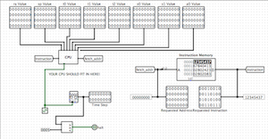
cpu
Using the Logism software, the program implements a 32-bit two-cycle processor with a reduced instruction set architecture that uses a subset of RISC-V instructions. More information about RISC-V click here. More information about the RISC-V datapath, pipelining, and hazards click here.
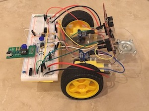
sixt33n
SIXT33N is a voice controlled robot car whose main components feature a multi-part circuit and a TI-MSP430 microcontroller unit. More information here.
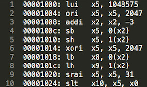
RIsc-v instruction set emulator
Provided a 32-bit input, the emulator is able to decode and execute a subset of the RISC-V instructions, including arithmetic, loading, storing, branching, and jumping. Implemented in C. More information about RISC-V here.
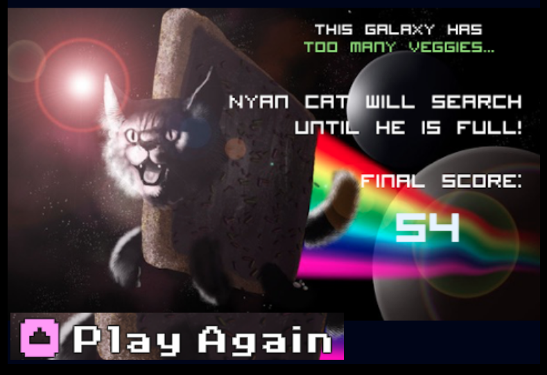
nyan cat
Inspired by a cartoon Pop-Tart cat featured on YouTube, Nyan Cat is a children's game implemented in the Berkeley-developed SNAP! programming language. It was featured at UC Berkeley's 2015 CS Education Day. More information here.
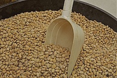
pintos
Building up from the Pintos operating system, features were incorporated to the threading system as well as support for user programs. For threading, an efficient alarm clock, priority scheduler, and a Multi-level Feedback Queue Scheduler (MLFQS) were added. For the user program support, argument passing, process control and file operation syscalls were added. Topics that are relevant to this project include threads, synchronization (interrupts, semaphores, locks, monitors, optimization barriers), memory allocation (physical, virtual, kernel vs. user), and more!
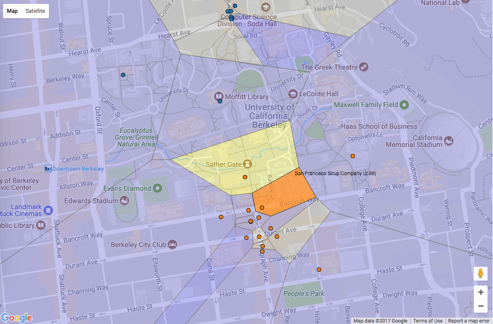
maps
Using machine learning features and Yelp's academic dataset, Maps is a visualization (in the form of a Voronoi diagram) of restaurant ratings in the UC Berkeley area. Implemented in Python.
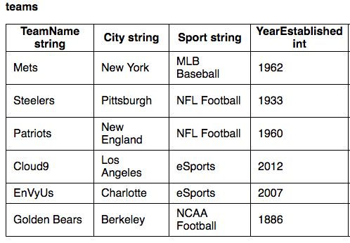
Database
A lower scale version of a database management system (DBMS) and a domain specific language (DSL). Through the DSL, users can interact with the data, create and join tables, and extract specific information. Implemented in Java.
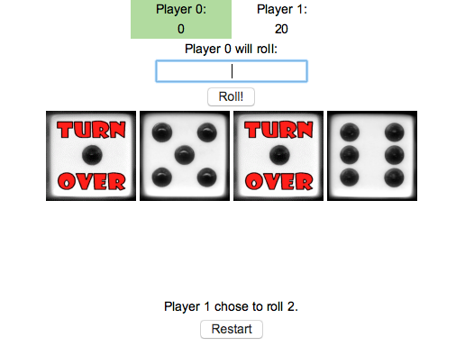
hog
This project is a simulator for the dice game Hog. It features multple strategies and makes use of control statements and high-order functions. Implemented in Python.
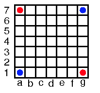
attax
A two person game played on a chess-like board. Each player starts with two colored pieces and the goal is to obtain as many pieces as possible. Users can interact with the game using a textual user interface.
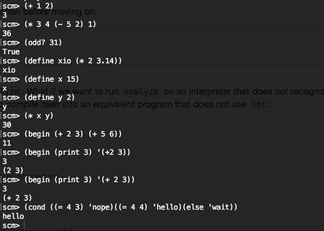
scheme interpreter
An interpreter for a subset of the Scheme language. The interpreter can handle reading scheme expressions, evaluating symbols, and calling built-in and user-defined procedures. Implemented in Python.
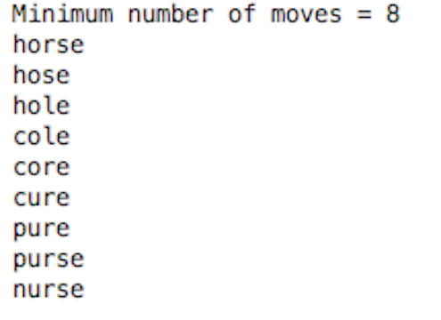
8 puzzle
Inspired by Noyes Palmer Chapman's 8 Puzzle problem, 8 Puzzle is an artificial intelligence that solves puzzles. The AI implements the A* search algorithm. One specific example of a solvable puzzle is the transformation of one word into another by adding, removing and changing letters. Implemented in Java.
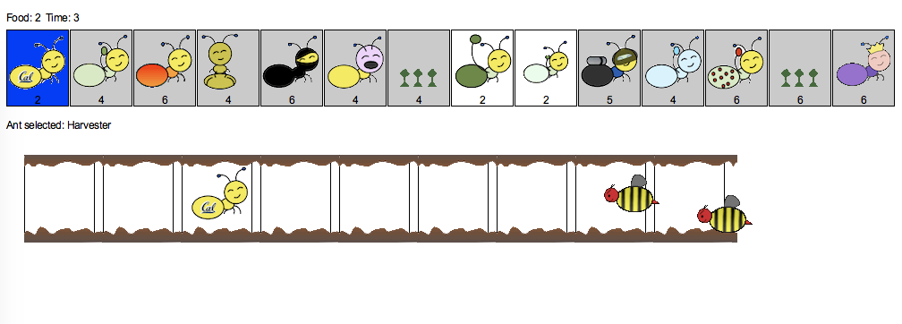
ants vs. somebees
Inspired by PopCap Games' Plants vs. Zombies, this tower defense game implemented in Python consists of functional and object-oriented programming paradigms including the use of objects, class attributes, and inheritance. Implemented in Python.
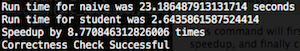
canny edge detection performance
The program speeds up image processing in performing edge detection using the Canny Edge Detection algorithm by an average of 8x. Techniques used included loop unrolling, x86 intrinsics, and OpenMP. Implemented in C. More information about OpenMP here. More information about x86 intrinsics here.
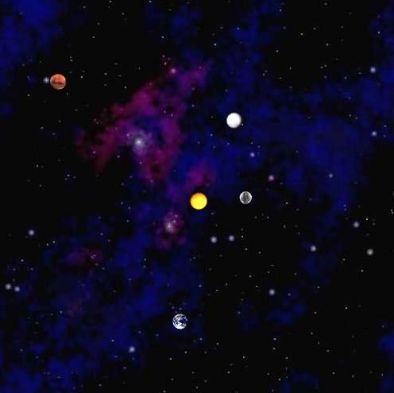
nbody
A program that simulates the motion of objects in a plane, taking into account Newton's Law of Universal Gravitation. Implemented in Java.
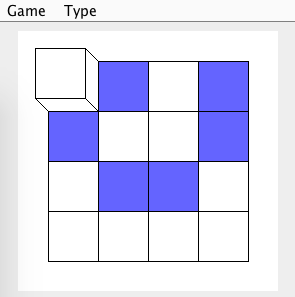
cube puzzle
A game that begins with a blank grid with only six painted squared and a blank cube. The cube can be rolled one unit up/down or left/right and exchanges color with the one on the board. Cube Puzzle implements a model view controller (MVC) and an observer pattern. Implemented in Java.